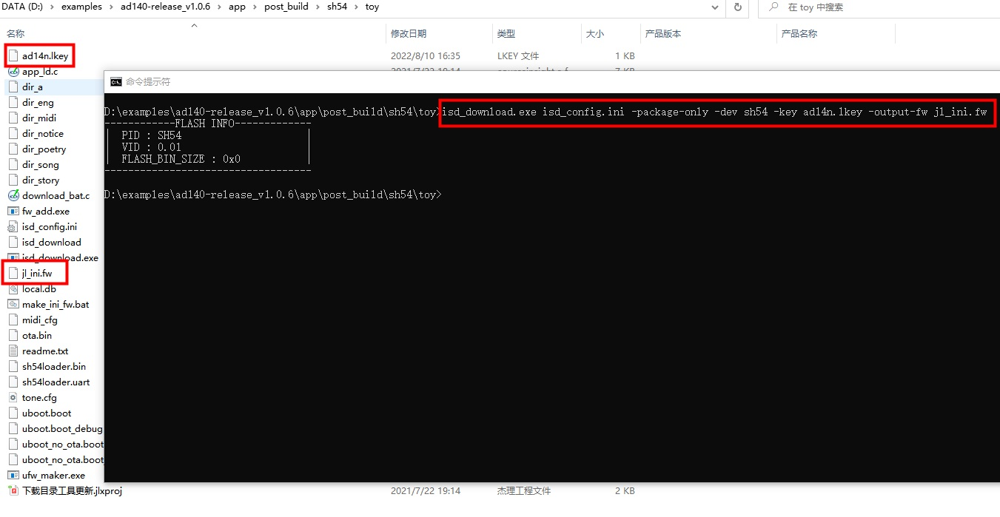
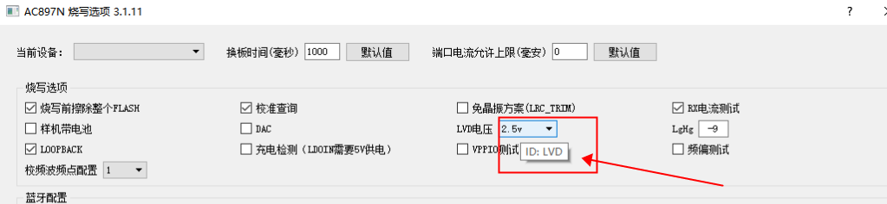

6.3. How to Set Programming Options When Generating a Programming File
6.3.1. How to specify programming options in the INI file
To set specific programming options, you can set the values of those options in the INI configuration file.
Note
ISD_DOWNLOAD.EXE in the download directory must be updated to version 4.0.17 or later.
Open the isd_config.ini file in the SDK download directory and add the configuration section [BURNER_OPTIONS].
Important
Note: In some SDKs, the isd_config.ini file is generated by preprocessing isd_config.c.
If you edit isd_config.ini directly and then rebuild, you may find that isd_config.ini has been changed back. Check whether this is the case for the SDK you are using. If it is, you need to modify isd_config.c instead.
For convenience, the following text continues to use the isd_config.ini file as the example.
Configure the default values of the specified programming options according to your actual needs. The LVD voltage is used as an example below:

To prevent the factory from changing the configured programming option values during programming, add the setting GUI_DISABLED=TRUE to the [BURNER_OPTIONS] section, as shown below:

Note
For older SDKs, the following additional steps are required: (for newer SDKs, you only need to modify isd_config.ini)
For the AC690X, AC691X, AC692X SDK V1, AC61N, AC62N, AC64N and AC81N SDKs, use fw_add.exe (version 1.0.15 or later) to add the
isd_config.inifile to the FW file. Example command:
fw_add.exe -fw <original.fw> -out <modified_output.fw> -add isd_config.ini -type 0x34
For the AC13N SDK, use the -ini parameter of bin_to_fw_v2.exe (version 2.0.8 or later) to add the
isd_config.inifile to the FW file. Example command:
bin_to_fw_v2.exe -flash <bin_file.bin> -key <key_file.key> -log info.log -chip AD13N -out <output_file.fw> -ini isd_config.ini
AC1X series and AC3X series chips are not supported at present.
6.3.2. How to generate a programming file that contains only the programming options and KEY (without FLASH programming information)
Note
ISD_DOWNLOAD.EXE in the download directory must be updated to version 4.2.32 or later.
Go to the SDK download directory.
Run the command
isd_download.exe isd_config.ini -package-only -dev <dev name> -key <your key file> -output-fw <output fw file>
Using the AD14N SDK v1.0.16 as an example, the steps are as follows:
Go to the SDK download directory

Make sure that
isd_download.exein the SDK download directory is version4.2.32or later. If it is not, double-click下载目录工具更新.jlxprojin the directory to updateisd_download.exeto the latest version. If下载目录工具更新.jlxprojdoes not exist in the SDK download directory, click here to download it.Add the programming options to be configured to isd_config.ini
Run
isd_download.exe isd_config.ini -package-only -dev sh54 -key ad14n.lkey -output-fw jl_ini.fwfrom the command line.jl_ini.fwis the programming file that contains the programming options and KEY.

Note
If you are not sure of the -dev parameter of the current SDK, open download.bat in the SDK download directory to check it.
Replace ad14n.lkey with your own KEY file.
6.3.3. Which programming options can be configured in the INI file
Note
The programming options supported by each chip model and their allowed values are as shown in the programmer UI. The option IDs and option values in the INI file are case-sensitive.
In 1-to-2 programmer versions after V2.26.5 and 1-to-8 programmer versions after V3.1.11, once the options dialog is open, you can hover the mouse over an option to see its ID directly, as shown below:


All currently supported programming options are listed below:
Option name in the programmer UI |
Option ID in the INI file |
Allowed values |
Description |
|---|---|---|---|
Charging current level (mA) (充电电流档位) |
ac_channel |
80 ~ 360 |
Per the values actually selectable in the programmer UI |
Analog signal recalibration (模拟信号再校准) |
asr |
ON |
|
Audio power supply test (音频电源测试) |
AUDIO_POWER_TEST |
TRUE |
TRUE: option checked |
Device with battery attached (样机带电池) |
BATTERY_SUPPLY |
TRUE |
TRUE: option checked |
Battery type (电池方案) |
BATTERY_TYPE |
LITHIUM |
LITHIUM: option value "Lithium battery" (锂电池) |
BTPLL |
BTPLL |
TRUE |
TRUE: option checked |
Switching charging current level (mA) (开关充电电流档位) |
buck_ac_channel |
100 ~ 600 |
Per the values actually selectable in the programmer UI |
Programming voltage level (烧录电压挡位) |
BURN_VOLTAGE |
5.5v ~ 7.0v |
Per the values actually available in the programmer UI for each chip model |
Charging detection (LDOIN requires a 5V supply) (充电检测) |
CHECK_LDOIN |
TRUE |
TRUE: option checked |
Calibration query (校准查询) |
CHECK_TRIM |
TRUE |
TRUE: option checked |
CHARGE_CURRENT |
CHRAGE_CURRENT |
20 ~ 40 |
Per the values that can actually be entered in the programmer UI |
Current test (电流测试) |
CURRENT_TEST |
TRUE |
TRUE: option checked |
DAC |
DAC |
TRUE |
TRUE: option checked |
DAC OS |
DAC_OS_TEST |
TRUE |
TRUE: option checked |
DAC_TRIM_LEAKAGE |
DAC_TRIM_LEAKAGE |
0 ~ 65535 |
Per the values that can actually be entered in the programmer UI |
DACVDD |
DACVDD |
TRUE |
TRUE: option checked |
Unpackaged chip (DIE) (未封装的芯片) |
DIE_CASE |
TRUE |
TRUE: option checked |
Erase entire FLASH before programming (烧录前擦除整个FLASH) |
ERASE_FLASH |
TRUE |
TRUE: option checked |
FM |
FM |
TRUE |
TRUE: option checked |
Frequency offset test (频偏测试) |
FREQ_OFFSET_COR |
TRUE |
TRUE: option checked |
Calibration signal frequency point configuration (校频波频点配置) |
FREQ_WAVE_POINT |
0 ~ 9 |
Per the values that can actually be entered in the programmer UI |
IQ_TRIM |
IQ_TRIM |
TRUE |
TRUE: option checked |
LDOIN TEST |
LDOIN_TEST |
TRUE |
TRUE: option checked |
LgHg |
LGHG |
-20 ~ 127 |
Per the values actually available in the programmer UI |
Linear charging current level (mA) (线性充电电流档位) |
line_ac_channel |
80 ~ 360 |
Per the values actually selectable in the programmer UI |
LNA |
LNA |
TRUE |
TRUE: option checked |
LNA_BIAS |
LNA_BIAS |
TRUE |
TRUE: option checked |
Enable PA9 long-press reset (使能PA9长按复位功能) |
LONG_RESET_EN |
TRUE |
TRUE: option checked |
LOOPBACK |
LOOPBACK |
TRUE |
TRUE: option checked |
Crystal-less solution (LRC_TRIM) (免晶振方案) |
LRC_TRIM |
TRUE |
TRUE: option checked |
LVD voltage (LVD电压) |
LVD |
<1.5v |
Per the values actually available in the programmer UI for each chip model |
LVD Action |
LVD_ACTION |
Default |
|
LVD voltage (LVD电压) |
LVD_DIE |
1.8v · 2.1v |
Valid for AD14N and AD15N when "Unpackaged chip (DIE)" (未封装的芯片) is checked; |
LVD2.6V |
LVD26 |
TRUE |
TRUE: option checked |
MIC channel (MIC通道) |
MIC_CHANNEL |
0 ~ 2 |
(This option exists only in certain special versions) |
MIC test threshold upper limit (MIC测试阈值上限) |
MIC_MAX_VALUE |
0 ~ 32768 |
Per the values that can actually be entered in the programmer UI |
MIC test threshold lower limit (MIC测试阈值下限) |
MIC_MIN_VALUE |
0 ~ 32768 |
Per the values that can actually be entered in the programmer UI |
MIC test time (MIC测试时间) |
MIC_TEST_TIME |
0 ~ 32768 |
Per the values that can actually be entered in the programmer UI |
MIC_0 power supply mode (MIC_0 供电方式) |
MIC0_POWER_MODE |
BIAS |
Per the values that can actually be entered in the programmer UI |
MIC_0 bias resistor (MIC_0 偏置电阻) |
MIC0_R_VALUE |
1.18k ~ 8.50k |
Per the values that can actually be entered in the programmer UI |
MIC_1 power supply mode (MIC_1 供电方式) |
MIC1_POWER_MODE |
BIAS |
Per the values that can actually be entered in the programmer UI |
MIC_1 bias resistor (MIC_1 偏置电阻) |
MIC1_R_VALUE |
1.18k ~ 8.50k |
Per the values that can actually be entered in the programmer UI |
MIC test frequency lower limit (MIC测试频率下限) |
MIN_MIN_FREQ |
0 ~ 20000 |
Per the values that can actually be entered in the programmer UI |
Check this if there is no P26 (VPP) pin |
NO_P26_VPP |
TRUE |
TRUE: option checked |
Board-change interval (ms) (换板时间) |
OPERATION_TIME |
0 ~ 10000 |
1 ~ 10 s |
OPTION_EN |
OPTION_EN |
0 ~ 65535 |
Per the values that can actually be entered in the programmer UI |
Force authentication code update (强制更新认证码) |
OVERWRITE_AUTH_CODE |
TRUE |
TRUE: option checked |
PA |
PA |
TRUE |
TRUE: option checked |
Enable PA7 short-press reset (使能PA7短按复位功能) |
PA7_RESET_EN |
TRUE |
TRUE: option checked |
Enable PB1 long-press reset (使能PB1长按复位功能) |
PB1_RESET_EN |
TRUE |
TRUE: option checked |
Enable PB10 short-press reset (使能PB10短按复位功能) |
PB10_RESET_EN |
TRUE |
TRUE: option checked |
Maximum standby current (uA) (待机电流最大值) |
POWER_DOWN_MAX |
0 ~ 255 |
Per the values that can actually be entered in the programmer UI |
Minimum standby current (uA) (待机电流最小值) |
POWER_DOWN_MIN |
0 ~ 255 |
Per the values that can actually be entered in the programmer UI |
Standby current test (待机电流测试) |
POWER_DOWN_TEST |
TRUE |
TRUE: option checked |
Maximum shutdown current (uA) (关机电流最大值) |
POWER_OFF_MAX |
0 ~ 100 |
Per the values that can actually be entered in the programmer UI |
Minimum shutdown current (uA) (关机电流最小值) |
POWER_OFF_MIN |
0 ~ 255 |
Per the values that can actually be entered in the programmer UI |
Shutdown current test |
POWER_OFF_TEST |
TRUE |
TRUE: option checked |
Maximum power-on current (uA) (开机电流最大值) |
POWER_ON_MAX |
0 ~ 255 |
Per the values that can actually be entered in the programmer UI |
Minimum power-on current (uA) (开机电流最小值) |
POWER_ON_MIN |
0 ~ 255 |
Per the values that can actually be entered in the programmer UI |
Power-on current test (开机电流测试) |
POWER_ON_TEST |
TRUE |
TRUE: option checked |
Power consumption test (1~255uA) (功耗测试) |
power_test |
1 ~ 255 |
Per the values that can actually be entered in the programmer UI |
Maximum power-up current (mA) (上电电流最大值) |
POWER_UP_MAX |
0 ~ 255 |
Per the values that can actually be entered in the programmer UI |
Minimum power-up current (mA) (上电电流最小值) |
POWER_UP_MIN |
0 ~ 255 |
Per the values that can actually be entered in the programmer UI |
Power-up current test (上电电流测试) |
POWER_UP_TEST |
TRUE |
TRUE: option checked |
Full RAM test (RAM全面测试) |
RAM_FULL_TEST |
TRUE |
TRUE: option checked |
Reset after success (成功后复位) |
REBOOT_AFTER_SUCCESS |
TRUE |
TRUE: option checked |
REF_TRIM (reference voltage calibration) |
REF_TRIM |
TRUE |
TRUE: option checked |
RX (RX current test) |
RX |
TRUE |
TRUE: option checked |
SARADC_FLUC |
SARADC_FLUC |
0 ~ 65535 |
Per the values that can actually be entered in the programmer UI |
SFC verification (SFC校验) |
SFC_CHECK/SDK_TYPE |
SOUNDBOX |
SOUNDBOX: option value "Speaker solution" (音箱方案) |
Enable PB2 short-press reset (使能PB2短按复位功能) |
SHORT_RESET_EN |
TRUE |
TRUE: option checked |
SPI_CLK |
SPI_CLK |
20M |
Per the values actually selectable in the programmer UI |
Whether to TRIM (是否TRIM) |
TRIM |
TRUE |
TRUE: option checked |
TX |
TX |
TRUE |
TRUE: option checked |
Serial port baud rate |
UART_BAUDRATE |
0 ~ INT_MAX |
Valid for UART upgrades |
UART type (串口类型) |
UART_TYPE |
DP(TX),DM(RX) |
Valid for UART upgrades |
USB screening mode (USB筛选模式) |
USB_CHECK_MODE |
NORMAL |
NORMAL: "Normal programming mode" (正常烧录模式) |
Whether DP/DM is used in the solution (方案中是否用到DP/DM) |
USB_DPDM |
TRUE |
TRUE: option checked |
USB/ISP |
USB_ISP |
TRUE |
TRUE: option checked |
Maximum allowed port current (mA) (端口电流允许上限) |
USB_PORT_CURRENT_THRESHOLD |
0 ~ 300 |
Per the values that can actually be entered in the programmer UI |
USB port voltage (V) (USB端口电压) |
USB_PORT_VOLTAGE |
3.2 ~ 6.7 |
Per the values actually selectable in the programmer UI |
VBAT voltage (V) (VBAT电压) |
vbat |
4.2 |
|
VOUT(mV) |
vout |
4600 |
Per the values that can actually be entered in the programmer UI |
VPPIO test (VPPIO测试) |
VPPIO_TEST |
TRUE |
TRUE: option checked |